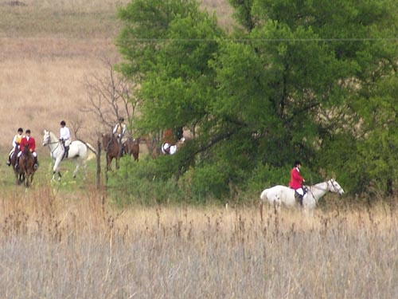

3/28/04
Thuy at our Closing Meet
Click here to view more pictures from the Closing Meet
Getting ready to go out. Here's my old truck, a '72 Ford. It gets us where we want to go (usually).
The storm clouds rolled in as we waited to head out, and there was a down pour for about 3 minutes while we roaded to the first covert.
Thuy and I helped hold hounds when we met up with the Tally Ho wagon.
Still got a drink from Father, who came out with Mother for the closing meet.
Here's Chrissie, the huntsman, calling in hounds.
Thuy has learned to take it easy. He'll gallop on with the rest, but comes back to a relaxed walk the second I ask (well, usually).
Thuy looking handsome while we wait.

Here Thuy and I are behind the Field Master, who is following the Huntsman.